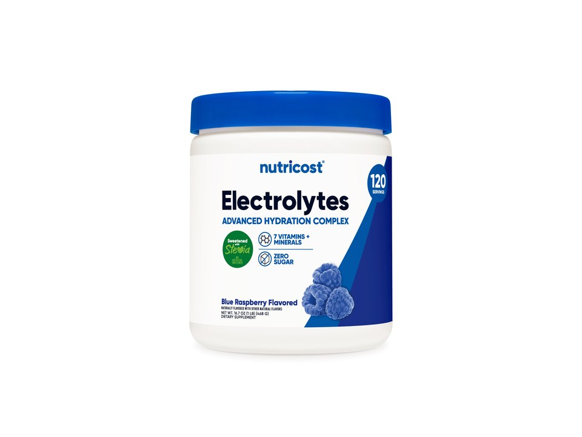

Product imagery supplied by the retailer. Packaging may vary — verify the Supplement Facts panel on the container you receive.
Nutricost
Electrolytes Advanced Hydration Complex
Our analysis — editorial take, not from the label
Potassium-forward rather than sodium-forward — 260 mg potassium against 90 mg sodium in a 4 g scoop — with vitamin C, B6 and B12 folded in, zero sugar claimed on the front of the tub (the panel prints no calorie or sugar row at all), and one of the lowest per-serving costs in the category at the 120-serving size.
- Sodium
- 90 mg
- Potassium
- 260 mg
- Sugar
- 0 g
- Servings
- 120
Price tier: Budget · relative cost per full serving across this database
We don't list dollar prices — they change daily and go stale. Check the live price instead:
View current price at Amazon Compare all hydration mixesScoop Sense doesn't collect user reviews and won't invent them. Read customer reviews on Amazon
Affiliate links — Scoop Sense may earn a commission at no additional cost to you.
Nine flavors including Fruit Punch, Grape, Blue Raspberry, Watermelon, Pineapple Ice, Orchard Blast and Strawberry Lemonade, in 60-serving tubs, with Fruit Punch, Grape and Blue Raspberry also sold at 120, sweetened with stevia and Reb M rather than sucralose.
Label verified: September 2026 · View supplement facts image
Label data
Per full serving · 120 servings per container · from the manufacturer's panel
| Sodium | 90 mg |
|---|---|
| Potassium | 260 mg |
| Magnesium | 40 mg |
| Sugar | 0 g |
| Potassium (potassium citrate and potassium chloride) | 260 mg |
| Sodium (sodium citrate and sodium chloride) | 90 mg |
| Magnesium (magnesium citrate and di-magnesium malate) | 40 mg |
| Vitamin C (ascorbic acid) | 90 mg |
| Proprietary blend | No |
Primary label source: Nutricost — official product page (sizes, flavors, label artwork) · verified September 2026
Cautions
- At 90 mg sodium per scoop this is a light everyday mix, not a heavy-sweat sodium replacement
- Sweetened with stevia and Reb M, which some people find has a distinct aftertaste
- Blue spirulina is used as a color in some flavors
Formulated for healthy adults — not intended for anyone under 18. Full health & safety notes
Product details
Where this label sits
Nutricost Electrolytes Advanced Hydration Complex is one of the hydration mixes in the Scoop Sense database. Every active ingredient on the panel is listed with its own dose — nothing is hidden inside a blend total. It runs 120 servings per container at the full labeled serving. Everything on this page comes from the manufacturer's supplement facts panel as of September 2026 — never from the marketing page.
Key ingredients & studied doses
- Potassium (potassium citrate and potassium chloride) · 260 mg. The larger of the two main electrolytes here; potassium works alongside sodium in normal fluid balance and muscle function.
- Sodium (sodium citrate and sodium chloride) · 90 mg. Sodium is the electrolyte lost in the greatest quantity in sweat, and 90 mg is a fraction of the amounts used in heavy-sweat rehydration research.
- Magnesium (magnesium citrate and di-magnesium malate) · 40 mg. Magnesium plays a role in normal muscle and nerve function; 40 mg is about a tenth of a day's Daily Value.
- Vitamin C (ascorbic acid) · 90 mg. A full Daily Value of vitamin C, alongside B6 and B12 — additions that go beyond a straight electrolyte mix.
Flavors & sweetener
Nine flavors including Fruit Punch, Grape, Blue Raspberry, Watermelon, Pineapple Ice, Orchard Blast and Strawberry Lemonade, in 60-serving tubs, with Fruit Punch, Grape and Blue Raspberry also sold at 120, sweetened with stevia and Reb M rather than sucralose.
Who it's best for
Flavour and light top-ups rather than replacing a real sweat loss — the sodium here is well under the amount hydration research works with. A reasonable pick when cost per serving matters. Derived from the label figures above — not medical advice.
How we log this label
Every entry is built the same way: we read the current supplement facts panel, log each disclosed dose, compare it against the amounts used in published research, flag proprietary blends, and state the cautions plainly. The full methodology explains each step.
This label against the research
How we evaluate labelsEach bar shows the amount commonly used in published human research, and where this label's dose falls against it. Research amounts are context, not a recommendation — they are not doses, and nothing here is medical advice. The bars compare what the label states; we do not laboratory-test the product to confirm it.
-
Sodium90 mg
The studied range is 300–700 mg of sodium per litre of fluid, and this label does not state the volume to mix a serving into — so its concentration, which is what the range measures, cannot be worked out from the panel. Check the mixing instructions on the pack.
Source: Mosler et al., German Journal of Sports Medicine 2020 (DGE position) — “the optimal sports drink should contain 400-1100 mg / l sodium in addition to carbohydrates (4-8%)”
Common questions about Nutricost Electrolytes Advanced Hydration Complex
How much sodium is in Nutricost Electrolytes Advanced Hydration Complex?
90 mg per serving, with no sugar. Sodium is the main electrolyte lost in sweat, but needs vary widely with sweat rate and diet — and daily sodium from food counts toward the same total.
Does Nutricost Electrolytes Advanced Hydration Complex disclose every dose?
Yes — the label lists an individual amount for each ingredient, with no proprietary blends. That is what the "label fully disclosed" tag on Scoop Sense means, and it is what lets each dose be compared against the amounts used in published research.
Do the numbers for Nutricost Electrolytes Advanced Hydration Complex assume one scoop or two?
All figures on this page are per full labeled serving. At 90 mg sodium per scoop this is a light everyday mix, not a heavy-sweat sodium replacement.